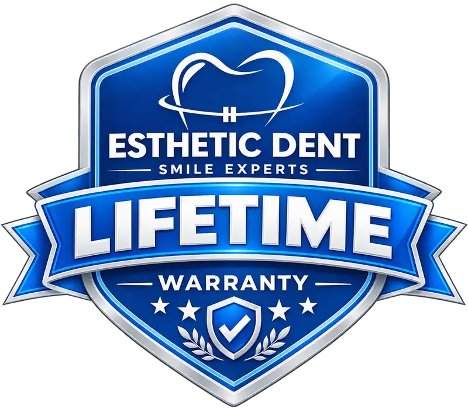

Diseño de Sonrisa de Arco Único
Coronas de arco completo y/o puentes fijos, con carillas cuando sea clínicamente apropiado.
$7,550 USD

Transforme su sonrisa mediante una planificación estética y funcional personalizada, restauraciones cerámicas a medida y atención clínica integral, todo coordinado durante su estadía en Costa Rica.
Vea y apruebe el diseño de su nueva sonrisa antes de que se creen sus restauraciones finales, aquí mismo en nuestro laboratorio dental propio durante su estadía en Costa Rica.
Transforme su sonrisa en Cóbano y disfrute el tiempo entre citas de las playas, la belleza natural y el ambiente relajado de Santa Teresa, Costa Rica.
Comience con una consulta virtual gratuita y explore sus opciones de tratamiento sin obligación de continuar.
35+
Más de una década y media de práctica clínica especializada en odontología cosmética avanzada y rehabilitación oral compleja.
2,000+
Un historial comprobado de tratamiento exitoso a más de 2,000 pacientes locales e internacionales con restauraciones biomiméticas.
Nuestro laboratorio propio y totalmente integrado garantiza ajustes clínicos inmediatos, control de calidad absoluto y cero demoras de envío.
Dos tamaños de paquete, cada uno con un precio fijo. Qué restauraciones se colocan en qué dientes se decide según el diseño de sonrisa aprobado, no según la lista de precios.
Coronas de arco completo y/o puentes fijos, con carillas cuando sea clínicamente apropiado.
$7,550 USD
Coronas y/o puentes fijos en ambas arcadas, con carillas cuando sea clínicamente apropiado.
$12,750 USD
Según sus necesidades clínicas y el diseño de sonrisa aprobado, su tratamiento puede combinar carillas ($450 cada una), coronas de zirconia o Emax / disilicato de litio ($450), o una combinación personalizada de ambas. El precio del paquete se mantiene igual sin importar la combinación de materiales y restauraciones clínicamente recomendada.
Todos los impuestos aplicables están incluidos.
Antes y después
El precio del paquete cubre todos los servicios enumerados a continuación. No hay cargos ocultos de laboratorio, consulta o transporte.
Su plan de tratamiento final se confirmará después de su evaluación presencial. Si se requiere atención dental fuera del paquete por necesidad clínica, se le explicará y cotizará por separado antes de proceder.
Todo en esta lista ya está incluido en el precio del paquete: el trabajo clínico, el trabajo de laboratorio y la logística de ambos.
Esthetic Dent también recibe a pacientes internacionales en nuestra clínica de Pavas en San José.
Puede recibir la misma planificación de tratamiento personalizada, atención liderada por especialistas y soporte coordinado mientras se hospeda en la ciudad. Nuestro equipo también puede organizar el transporte entre su hotel y las citas dentales programadas.
Ya sea que elija San José o la Península de Nicoya, recibirá la calidad, atención y soporte que Esthetic Dent brinda a lo largo de su viaje dental.
Su Diseño de Sonrisa se planifica utilizando Diseño Digital de Sonrisa, escaneo intraoral 3D y tecnología CAD/CAM avanzada. Sus carillas y coronas se crean luego en nuestro laboratorio dental propio, donde su dentista y su técnico dental colaboran directamente durante todo el proceso.
Usted revisará la forma, el tamaño, las proporciones, el tono y la apariencia general propuestos de su nueva sonrisa antes de que se fabriquen sus restauraciones finales. Cuando sea clínicamente apropiado, su dentista también puede recomendar una prueba en boca para brindar una vista previa física adicional.
Sin demoras de envío a laboratorios externos, los ajustes de forma, tono y ajuste se pueden completar en el sitio, lo que nos ayuda a completar su Diseño de Sonrisa durante el mismo viaje.
Como beneficio adicional de su Paquete de Diseño de Sonrisa, le ofreceremos un blanqueamiento dental profesional como regalo, sin costo adicional, cuando su dentista tratante determine que mejoraría la armonía general del color de su sonrisa. El blanqueamiento se realiza en los dientes naturales correspondientes para ayudar a crear un tono más armonioso junto a sus nuevas restauraciones cerámicas.
¡La Mejor Atención Dental en Costa Rica Merece la Mejor Garantía del Mundo!
Le retamos a mirar a su alrededor y comparar.
Elija Esthetic Dent para una experiencia dental sin preocupaciones, respaldada por un compromiso de por vida con su sonrisa.

Su Diseño de Sonrisa puede combinar carillas de disilicato de litio y coronas de zirconia según las necesidades estéticas y estructurales de cada diente.
Estas cerámicas premium ofrecen excelente resistencia, resistencia a la decoloración y una estética de aspecto natural. Cada restauración se personaliza para complementar sus rasgos faciales, sus necesidades clínicas y el diseño de sonrisa aprobado.
Conozca más sobre la durabilidad, el cuidado y el mantenimiento de las carillas, coronas y puentes fijos en nuestra guía completa.
Cuéntenos sus objetivos para su sonrisa y explore qué opción de paquete puede ser la adecuada para usted. No se requieren radiografías ni registros clínicos para comenzar.
Su dentista realiza una evaluación clínica integral, un análisis facial y de sonrisa, escaneos digitales y las imágenes diagnósticas necesarias para confirmar su plan de tratamiento final.
Cada diente se prepara solo lo clínicamente necesario para la carilla o corona seleccionada, con énfasis en preservar la estructura dental sana.
Un escáner intraoral 3Shape captura imágenes 3D detalladas de sus dientes preparados, que nuestro laboratorio dental propio utiliza para diseñar sus restauraciones personalizadas.
Utilizando sus impresiones digitales, nuestro equipo crea el diseño final de sonrisa para su revisión. Usted puede evaluar la forma, el tamaño, las proporciones, el tono y la apariencia general propuestos antes de que se fabriquen sus restauraciones finales. Cuando sea clínicamente apropiado, su dentista también puede recomendar una prueba en boca.
Una vez que usted aprueba el diseño final, nuestros técnicos dentales fabrican cada carilla o corona personalizada en nuestro laboratorio propio utilizando el material seleccionado para su caso.
Sus restauraciones finales se evalúan en cuanto a ajuste, tono, mordida, comodidad y apariencia general. Una vez aprobadas, se colocan de forma segura utilizando la técnica de adhesión o cementación adecuada, seguida de los ajustes finales de mordida y comodidad.
1 / 7
No necesita saber si necesita carillas, coronas o una combinación de ambas. Cuéntenos sus objetivos y nuestro equipo le ayudará a explorar la opción adecuada para su sonrisa.